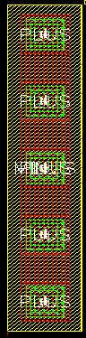
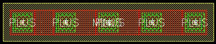

c4t_mim rows and columns properties
these layouts show the effect of varying the rows and columns properties for an example c4t_mim cap
rows = 1, columns = 1 (this is the default)
rows = 1, columns = 5

rows = 5, columns = 1

rows = 5, columns = 5